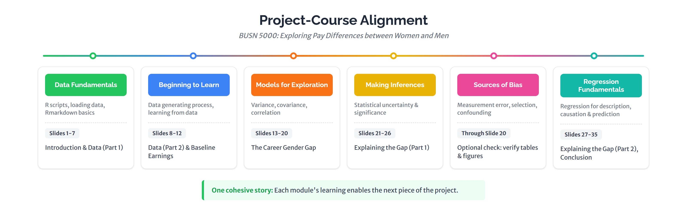

3 Main Project
If you have successfully completed the Pre-project Exercise, you’re ready to start the Main Project.
The deliverable is a 35-slide deck examining pay differences between women and men using the March 2024 CPS. We strongly recommend adopting a cadence for your project activity that is in sync with our treatment of related course topics. Here is the mapping:

If you fall behind on the course content, the project gets harder fast. Stay on schedule. We won’t have any sympathy for those who start late and come up short in the end.
To help you stay on track, we offer an optional Project Progress Check, which covers the first 20 slides. As a nudge to take us up on the option, we will award up to 5 bonus points depending on the correctness of your submission. Even if you whiff on the progress check, you will be in a much better position to succeed on the final project than if you skip the check entirely.
3.1 First, download the Main Project file pack and sort its contents
You should already have downloaded and sorted the contents of the Pre-project Exercise file pack. Now do the same with the Main Project file pack, which contains
project.Rmd— R Markdown template you will complete and knit into a slide deckcpsmar_e.R— R script that creates the CPS data extract for your analysis from the raw CPS filescheck_setup_project.R— R script that checks your setup for the Main Project
Here’s where each file goes:
| File | Goes in |
|---|---|
project.Rmd |
Project/ (root) |
cpsmar_e.R |
Project/r/ |
check_setup_project.R |
Project/r/ |
Run check_setup_project.R to confirm everything’s in the right place.
3.2 General instructions
Before you jump into your project work, take note of the following general instructions that apply to the entire project. Overlooking any of them will prove costly.
Slide format
An acceptable submission has 35 slides on 35 pages of PDF output, rendered in landscape mode, precisely matching the format of the Final Project reference deck. If your deck doesn’t comply exactly with the reference deck, it will receive a score of 0.
Write-up line limits
Each slide requiring text content has a specific line limit. We will not read beyond the line limit.
What counts as a “line”“Lines of text” means rendered, countable lines on your final PDF — not sentences, and not lines as they appear in RStudio’s editor or output preview. A long sentence that wraps into three visual lines on the rendered slide counts as three lines. Submissions that exceed the line limit are heavily penalized. Always check your knitted PDF and count the actual visible lines on the slide before you submit.
HTML code for table formatting
Code chunks associated with table construction are wrapped in the
<div class="table-...">and</div>HTML tags, which govern table formatting. Do not edit or remove them.The YAML block
As we explained in the Pre-project Exercise, the YAML block at the top of the template contains important formatting information. You must edit the
author:field to insert your name, but do not change anything else in the YAML.If your YAML becomes corrupted, here is the definitive code block to replace your corrupted version:
--- title: "BUSN 5000 Project" subtitle: "Exploring Pay Differences between Women and Men" author: "First Name Last Name" date: | | Summer 2026 | (updated `r format(Sys.time(), '%d %b %y')`) output: ioslides_presentation: css: css/project_slidedeck.css widescreen: true ---The setup chunk
Like with the Pre-project Exercise template, below the YAML you will find the setup chunk and it is complete as is. Do not touch it. As you should know from the Pre-project Exercise, the setup chunk loads the required R packages and sets global options for the rest of the document.
Echo settings
The setup chunk sets
echo = TRUE, which will display code chunks by default. Note that we have overridden this global setting on certain slides by settingecho = FALSEin those chunks, where displaying the code would be redundant or otherwise not valuable. Do not change these individualechosettings.
Get the units right
In your write-ups, make sure you use percent and percentage point correctly. They are not interchangeable. For example, a change in the gender wage gap from 25% to 20% is a 5 percentage point decrease — not a 5% decrease. A 5% decrease in the gender wage gap from a 25% baseline would amount to a change of 1.25 percentage points to 23.75%. We will definitely penalize you for this sort of error, so don’t make it.
Workflow tipYou can run individual chunks without knitting the entire document, so work the project code chunks one at a time. After you complete a chunk, confirm it runs cleanly by clicking the green play button at the top-right of the chunk. If it does, set
eval = TRUEon that chunk so its output appears when you knit the whole document.
3.3 Slide-by-slide instructions
There are 35 slides in a successfully rendered deck. Some are just section dividers, with no point values and requiring no contribution from you. For those that require your input – either code completions or text responses – we provide specific instructions for how to enter it correctly, along with the corresponding point values in parentheses. So, here it goes, slides 1-35:
BUSN 5000 Project.
Title slide. It’s auto-generated by the YAML with your name as entered on the
author:line.Academic Honesty Statement (1 point)
Type your first and last name on the “Signature:” line. You may consult Terry Analytics Lab staff, the TA, or the instructor for assistance — but your deliverable must represent your work and be completed and submitted by you.
Introduction
Section divider.
Overview (2 points)
Provide a brief overview of the project. Include:
- What you are trying to learn about
- The data you are using to learn
- A brief summary of your findings
Limit your overview to 6 lines of text.
Pro tipTo quote Yoda: “Do or do not. There is no try.” When you explain what your project is about or summarize what you learned, don’t say “I try / seek / look / aim / attempt (or am trying / seeking / …)”. Instead, say “I show / document / demonstrate / report / find …”. Never say “I hope…”
You might write this slide last. It’s easier to summarize your findings after you’ve completed the analysis.
Data
Section divider.
March 2024 CPS (4 points)
Using the ASEC documentation (
cpsmar24_documentation.pdf), provide a brief overview of the March 2024 CPS. Include:- A description of the standard monthly CPS
- The additional information collected in the ASEC
- Approximately the number of households surveyed in March 2024
Limit your summary to 4 lines of text.
Pro tipYou can ask AI, but you should verify the response by consulting the CPS documentation and formulate the overview in your own words.
March 2024 CPS Extract (4 points)
Complete the
read_datacode chunk to read the extract you created withcpsmar_e.R.Then, in the write-up section, explain the actions you applied to the March 2024 survey in
cpsmar_e.Rto create the data extractcpsmar_e.csv. Include:- The variables you selected from the person file
- The variables you selected from the household file
- The restriction(s) you applied to the data extract
- The number of observations and variables in the data extract
Limit your explanation to 6 lines of text.
Pro tipsRefer to each variable by its plain English meaning, not the name used in the script. Refer to the key tidyverse “verbs” in the script, like
mutateandrename.Analysis sample (2 points)
Complete the
btl1code chunk to create your analysis sample (cpsmar_a) with the following restrictions and additions:- Restrict to individuals who are 23 to 62 years old (inclusive)
- Restrict to individuals who have positive earnings
- Create a character-valued
gendervariable
Underneath the code chunk, document the number of observations in your analysis sample.
Limit your documentation to 2 lines.
Pro tipsRefer to your notes or the slides for examples of
filterandmutate. Consult the Environment tab in the Northeast pane of RStudio for information about thecpsmar_adata frame.Baseline earnings distributions
Section divider.
Plotting earnings distributions
Complete the
btl2code chunk to:- Create the
figure1ggplot object (the earnings distribution by gender plot) - Calculate average earnings for each gender using the
earnings_fvmobject - Pull the average earnings for women and men into single values (
avg_earnings_f,avg_earnings_m) usingfilterandpull
- Create the
Distribution of earnings by gender (8 points)
Complete the
btl2.5code chunk to display Figure 1 by writing the name of the Figure 1 object.Baseline comparisons (4 points)
Summarize the main empirical facts associated with Figure 1. Include:
- A description of the most important fact communicated by the figure
- The average earnings of men and women
- The dollar difference and percentage difference in average earnings between men and women in the sample
Limit your summary to 5 lines of text on the slide.
Pro tipsUse inline R syntax with the
avg_earnings_fandavg_earnings_mobjects to insert the respective averages in your write-up rather than typing the numbers manually.The career gender gap
Section divider.
Wages and hours differences (8 points)
Complete the
mi1code chunk to create and display Table 1 (wages and hours by gender).Documenting the differences (2 points)
Summarize the wage and hours differences presented in Table 1.
Limit your documentation to 3 lines of text on the slide.
Plotting career log wage profiles
Complete the
mi2code chunk to estimate log wage profiles for women and men and create Figure 2.Career log wage profiles (8 points)
Complete the
mi2.5chunk to display Figure 2.Estimating wage differences over a career
Complete the
mi3code chunk to create Table 2. This involves:- Creating
malesandfemalesobjects usingfilterandrename - Merging the two into the
diff_fvmobject usinginner_join - Calculating the difference between average log wages using
mutate - Grouping by
age_group - Using
kable()to organize the results into thetable2object
- Creating
Evolution of the gender wage gap (8 points)
Complete the
mi3.5code chunk to display Table 2.Discussing the gender wage gap evolution (2 points)
Summarize the results presented in Figure 2 and Table 2.
Limit your summary to 3 lines of text on the slide.
Explaining the gender wage gap
Section divider.
Fitting the log wage profiles
Complete the
reg1code chunk to create Figure 3 by fitting the career profiles with a quadratic in age.Log wage profiles with quadratic fits (8 points)
Complete the
reg1.5chunk to display Figure 3.Gender differences in education (8 points)
Complete the
ed_varscode chunk to create and display Table 3 (educational attainment by gender).Gender differences in demographics (8 points)
Complete the
demo_varscode chunk to create and display Table 4 (demographic characteristics by gender).Documenting differences in characteristics (4 points)
- Summarize the educational attainment differences presented in Table 3
- Summarize the differences in demographic characteristics presented in Table 4
Limit your documentation to 6 lines of text on the slide.
Controlling for education and demographic characteristics
Complete the
reg2acode chunk to create:- The
singlessubset of the analysis data - The
modelsobject containing five regression models that incrementally add controls for education and demographic characteristics, with the fifth restricting to unmarried workers without children under 6 (“Only Singles”)
In the regression analysis, you’ll distinguish between personal and household characteristics among the demographic variables.
Pro tips- Moving from top to bottom in the
modelsobject, the list of controls grows as indicated by the name of the model — with the exception of the final model “Only Singles”, which estimates the same relationship as the “Add Person” model but on the new subset. - To decide whether a variable belongs in the “Add Person” or “Add Household” model, ask yourself: “Can I define this variable for a particular individual irrespective of other individuals who may or may not exist in their life?” If yes → Person. If no (it depends on someone else, like a spouse or a child) → Household.
- The
Reporting the results
Complete the
reg2bcode chunk to create Table 5. This involves:- Constructing the coefficient map object to display only the gender and age coefficient estimates
- Constructing the goodness-of-fit object to display sample size and \(R^2\) values
- Constructing a
rowsobject to distinguish the regression specification associated with each column
Pro tipMake sure you report robust standard errors and indicate that you do in a table note.
Explaining the gender wage gap (8 points)
Complete the
reg2.5chunk to display Table 5.Documenting the findings (4 points)
Summarize how the estimated average gender wage gap changes as you add education, personal, and household characteristics to the regression — and then how it changes when the sample is restricted to singles.
Limit your documentation to 6 lines of text on the slide.
Pro tipsStart your write-up with the baseline model and describe subsequent results relative to the baseline. Focus on the Female coefficient estimate and its standard error. Remember how the coefficient estimate is correctly interpreted.
Conclusion
Section divider.
Summary (4 points)
Briefly summarize the objective of the project and its main findings. Note:
- The sample on which your analysis is based
- The overall gender wage gap
- How it evolves over a career
- How it varies when controlling for education and demographic characteristics
Limit your documentation to 7 lines of text on the slide.
Appendix
Section divider.
Data documentation
Complete the
var_doccode chunk to create a table of the main variables used in this project with their definitions.List of main variables with definitions (4 points)
Once you complete the
var_docchunk on the previous slide, seteval = TRUEon this slide to render the table of main variables with their definitions.
3.4 Common pitfalls
If you completed the Pre-project Exercise successfully, you have already bypassed the most common mistakes. If you nevertheless are having trouble completing the Main Project, Common Errors provides a comprehensive listing of problems we have seen students encounter, along with explanations and solutions. Some typical issues with the Main Project are:
- Variable name confusion — defining
cpsmar_abut referencingcpsmar_e(or vice versa) in a later chunk. See Common Errors. - Forgetting to run
cpsmar_e.Rbefore knitting. See Common Errors. - Touching the setup chunk’s
include = FALSE— same scaffolding error as the pre-project. See Common Errors. - Editing the YAML beyond the author line. See Common Errors.
3.5 What happens next
Whether you are at the Progress Check stage or at the end, the next step is to prepare to submit your work to Gradescope. Submission walks you through the entire process.